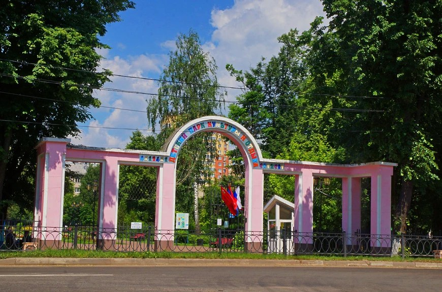
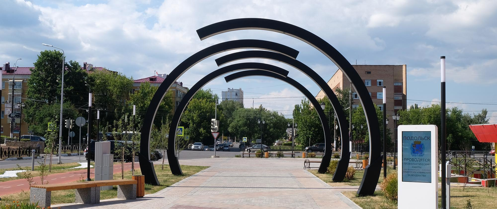
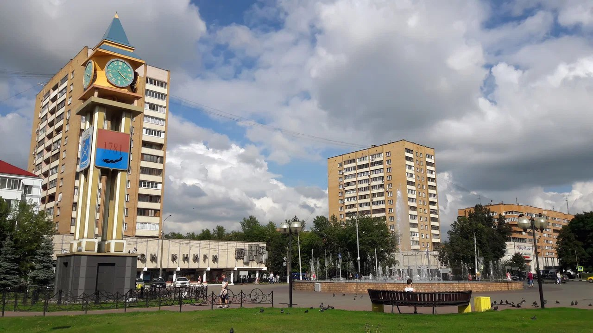
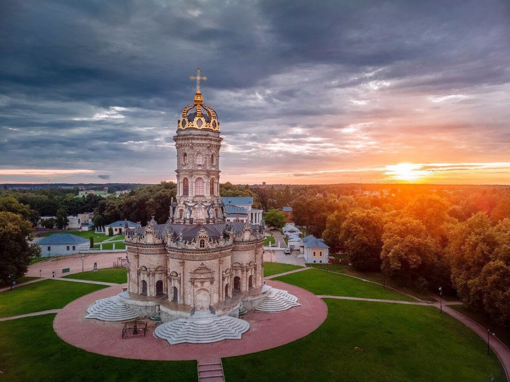
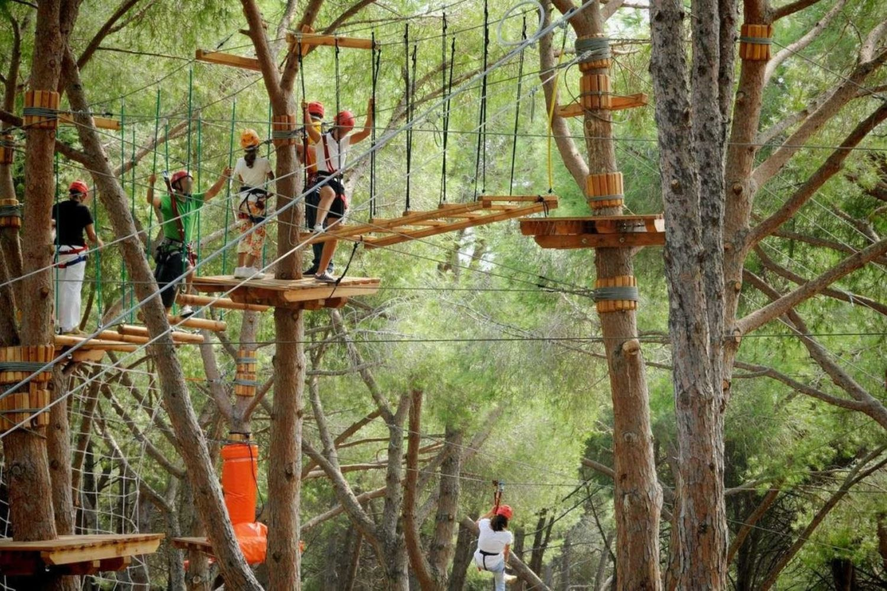

1. Детский парк культуры и отдыха (Заводская ул., 6А, микрорайон Климовск)
Детский парк культуры и отдыха, расположенный на улице Заводская, 6А в микрорайоне Климовск, является
отличным местом для проведения досуга детей всех возрастов. Здесь представлены разнообразные аттракционы,
игровые площадки и зоны для активного отдыха. Парк также проводит различные мероприятия и праздники,
которые делают его еще более привлекательным для посетителей.

2. сквер имени 50-летия ВЛКСМ (Подольск, бульвар Юности)
Сквер имени 50-летия ВЛКСМ, расположенный на бульваре Юности в городе Подольск, это отличное место для
отдыха. Тут можно прогуляться по зеленым аллеям, насладиться тишиной и покоем, а также посетить различные
мероприятия, которые проводятся в сквере.

3. Сквер Поколений (Подольск, Центральный микрорайон)
Сквер Поколений - это уютное место в центре Подольска, где можно отдохнуть от городской суеты и
насладиться красивыми видами. Здесь есть скамейки для отдыха, фонтаны и множество зелени. В сквере также
проводятся различные выставки, концерты и фестивали.

4. Липовый парк (Подольск, поселок Дубровицы)
Липовый парк - это прекрасное место для прогулок и отдыха на природе в поселке Дубровицы, недалеко от
Подольска. Тут можно насладиться красотой липовой аллеи, погулять по зеленым лужайкам и насладиться
свежим воздухом. В парке также есть детские площадки, места для пикника и спортивные площадки.

5. Айвенго парк, Веревочный парк (г. о. Подольск, М-2 Крым, 41-й километр)
Айвенго парк - это отличное место для активного отдыха всей семьей. Здесь вы найдете множество трасс
различной сложности, которые подойдут как для новичков, так и для опытных скалолазов. В парке также есть
зоны для отдыха, кафе и магазины.